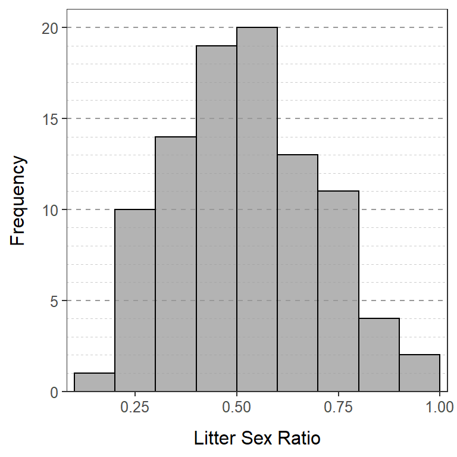
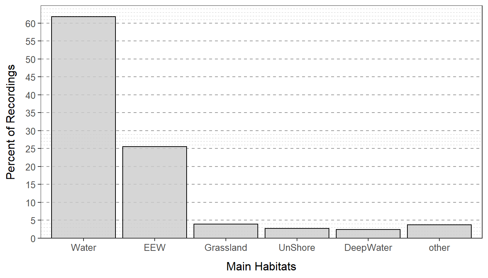

A student asked six of her friends how many states they had visited in their lifetime. Their answers 8, 3, 17, 15, 4, and 19. Compute the median, mean, standard deviation, and range of these data “by hand.”
In a preliminary study, a researcher recorded the weekly home range of five Red Kangaroos (Macropus rufus) in New South Wales. The five home ranges were 258, 310, 560, 470, and 502 hectares. Compute the median, mean, standard deviation, and range of these data “by hand.”
The following values are the maximum gauge heights of the Bois Brule River in Brule, WI from 10-25Feb05. Compute the median, IQR, and range.
1.56 1.54 1.54 1.57 1.58 1.61 1.60 1.69
1.99 2.11 1.98 1.76 1.69 1.99 1.86 1.53
The following values are the population density (number of people per acre of land) for 15 randomly selected Wisconsin counties. Compute the median, IQR, and range.
429.0 67.8 52.1 97.4 57.9 354.9 16.2 19.1
127.0 27.6 10.2 54.6 28.8 30.1 20.2
The table below contains the concentrations (International Units per liter) of creatine phosphokinase (an enzyme related to muscle and brain functions) in 36 male volunteers. Compute the median, IQR, and range.
121 82 100 151 68 58 95 145 64
119 104 110 113 118 203 62 83 67
201 101 163 84 57 139 60 78 94
93 92 110 25 123 70 48 95 42The table below contains the carbon monoxide levels (ppm) arising from one of the stacks for an oil refinery northeast of San Francisco between April 16 and May 16, 1993. The measurements were submitted as evidence for establishing a baseline to the Bay Area Air Quality Management District (BAAQMD). Compute the median, IQR, and range.
30 30 34 36 37 38 40 42 43 43 45
52 55 58 58 58 59 63 63 71 75 85
86 86 99 102 102 141 153 261 21See this hint for how to check your answers with R.
McNutt and Silk (2007) examined pup production, sex ratios and survivorship of African wild dogs (Lycaon pictus). In one part of their study, they computed the sex ratio of pups in each litter by dividing the number of males in the litter by the total number of pups in the litter (thus, 1.0 means all males and 0.7 means 70% were males). The results from making this calculations on their sample of litters is shown in the histogram below.

Use this histogram to answer these questions.
King et al. (2013) examined the habitat use of Brown Pelicans (Pelecanus occidentalis) in the Northern Gulf of Mexico. In one part of their study, they recorded the GPS location where each pelican was spotted. The bar chart below shows the percentages of those GPS locations in major habitats. Use this information to answer the questions further below. [Note that Water=“shallow near-shore waters”, EEW=“estuarine emergent wetland”, Grassland=“shoreline grasslands”, UnShore=“unconsolidated shore”, DeepWater=“deeper offshore waters”, and Other=“all other habitats”.]
